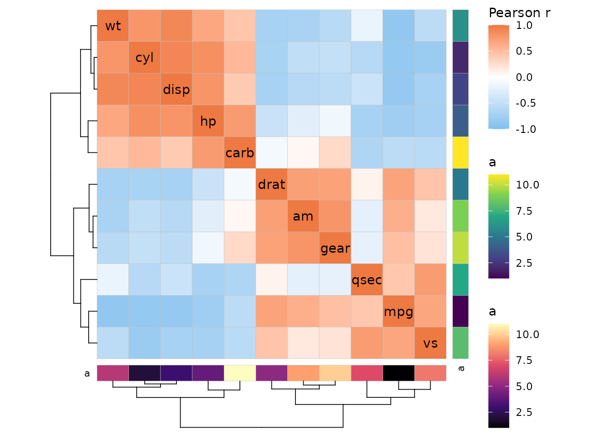
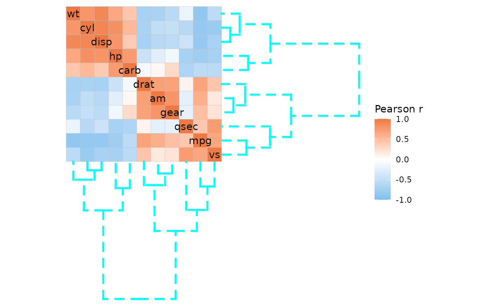

Heatmap rows and columns are clustered if the
cluster_rows and cluster_cols arguments are
set to TRUE. Distance measure and clustering method can be
specified with the cluster_distance and
cluster_method arguments, passed on to the
stats::dist() and stats::hclust() functions,
respectively.
ggcorrhm(mtcars, cluster_rows = TRUE, cluster_cols = TRUE)The cluster_rows and cluster_cols arguments
can also be hclust or dendrogram objects if
more control is required.
Dendrogram position
The positions of the dendrograms can be changed with the
dend_rows_side (‘left’ or ‘right’) and
dend_cols_side (‘top’ or ‘bottom’) arguments. For
triangular layouts (of symmetric matrices) the dendrograms are placed on
the non-empty sides of the heatmap.
# The dendrogram sides can be adjusted with the 'dend_rows_side' and 'dend_cols_side' arguments
plt1 <- ggcorrhm(mtcars, cluster_rows = TRUE, cluster_cols = TRUE,
dend_rows_side = "left", dend_cols_side = "top")
# Dendrograms can be hidden by setting 'show_dend_rows' and/or 'show_dend_cols' to FALSE
plt2 <- ggcorrhm(mtcars, cluster_rows = TRUE, cluster_cols = TRUE, layout = "bl",
show_dend_rows = FALSE, dend_cols_side = "top")
plt1 + plt2If annotation and a dendrogram are on the same side, the dendrogram is moved to make place for the annotation.
annot <- data.frame(.names = colnames(mtcars), a = 1:11)
ggcorrhm(mtcars, cluster_rows = TRUE, cluster_cols = TRUE,
annot_rows_df = annot, annot_cols_df = annot,
dend_rows_side = "left")
Changing how the dendrograms look
The dend_col, dend_dist,
dend_height, dend_lwd, and
dend_lty arguments change the colour, distance to the
heatmap, height (scaling), linewidth, and linetype of the dendrograms,
respectively.
ggcorrhm(mtcars, cluster_rows = TRUE, cluster_cols = TRUE,
dend_col = "cyan", dend_height = 2, dend_lwd = 1, dend_lty = 2)
To apply these changes to only one of the dendrograms, use the
dend_rows_params and dend_cols_params
arguments. These arguments take a named list containing one or more of
col, dist, height,
lwd, and lty.
More customisation using dendextend
Finer customisation of dendrograms can be done with the
dend_rows_extend and dend_cols_extend
arguments. These use the dendextend package to change the
dendrogram appearance. The input can be either a named list of lists,
where each element is named after the dendextend function
to use and contains a list of the arguments to pass, or a functional
sequence (fseq object) that strings together the functions
to use. A few examples are shown below, see the dendextend
vignette vignette("dendextend", package = "dendextend") for
more details on how to use its functions.
# List method
ggcorrhm(mtcars, cluster_rows = TRUE, cluster_cols = TRUE, dend_height = 1,
# Multiple elements can use the same function as lists don't require unique names
dend_rows_extend = list(
set = list("branches_k_col", k = 3),
set = list("branches_lty", c(1, 2, 3))
),
# NULL or empty list if no arguments are to be passed
dend_cols_extend = list(
highlight_branches_lwd = list(values = seq(1, 4)),
highlight_branches_col = list()
))
#> Loading required namespace: colorspace
# The equivalent call using the fseq method
# library(dplyr)
# library(dendextend)
# ggcorrhm(mtcars, cluster_rows = TRUE, cluster_cols = TRUE,
# dend_rows_extend = . %>%
# set("branches_k_col", k = 3) %>%
# set("branches_lty", c(1, 2, 3)),
# dend_cols_extend = . %>%
# highlight_branches_lwd(values = seq(1, 4)) %>%
# highlight_branches_col())It is also possible to display the nodes of the dendrograms.
# Get clustered labels
clust <- hclust(dist(cor(mtcars)))
clust_lab <- clust$labels[clust$order]
ggcorrhm(mtcars, cluster_rows = TRUE, cluster_cols = TRUE, dend_height = 1,
# Here using the fseq method
dend_rows_extend = . %>%
# More on customising segments
# Can specify branches to affect by labels using the 'by_labels_branches_*' options
set("by_labels_branches_col", value = clust_lab[1:5], TF_values = "red") %>%
set("by_labels_branches_lty", value = c("drat", "vs"), TF_values = 3) %>%
set("by_labels_branches_lwd", value = clust_lab[6:11], TF_values = 1) %>%
# Node and leaf options
# Specify all nodes before leaves so the leaf options are not overwritten
# pch must be specified for a node to be drawn
set("nodes_pch", 19) %>%
set("nodes_cex", 2) %>%
set("nodes_col", "orange") %>%
set("leaves_pch", 21) %>%
set("leaves_cex", 3) %>%
set("leaves_col", "purple"),
dend_cols_extend = . %>%
highlight_branches_col() %>%
# Node options
set("nodes_pch", c(15, 16, 17)) %>%
set("nodes_cex", 2:4) %>%
set("nodes_col", 1:5))![mtcars correlation heatmap with clustered rows and columns. The row dendrogram is red in one half and black in the other. The black side has a thicker linewidth and two branches are dashed at the segments closest to the heatmap. All leaves are purple unfilled circles and the rest of the nodes are orange and filled circles. The column dendrogram is coloured with the viridis scale shifting gradually as it gets closer to the heatmap. Nodes are a mix of different shapes (squares, circles, triangles), colours (black, blue, red, green, cyan) and sizes.](clustering_files/figure-html/unnamed-chunk-7-1.png)
Leaves can be reordered using functions like ladderize
or rotate, though it is not recommended to do for only one
dimension if the matrix is symmetric as the diagonal may end up in
strange places. Triangular layouts are not supported if the clustering
causes the matrix to become asymmetric.
plt1 <- gghm(scale(mtcars[11:15, ]), cluster_rows = TRUE, na_remove = TRUE) # Remove NaNs introduced by scaling
plt2 <- gghm(scale(mtcars[11:15, ]), cluster_rows = TRUE, na_remove = TRUE,
# dendextend::rotate() to flip the order of rows
dend_rows_extend = . %>% rotate(5:1))
plt1 / plt2
# Only the rows are reordered, causing the matrix to become asymmetric
# If the layout were triangular (or mixed), the warning would be slightly different
# and the same plot as below would be produced (forced full layout).
ggcorrhm(mtcars, cluster_rows = TRUE, cluster_cols = TRUE,
dend_rows_extend = list(ladderize = NULL))
#> Warning: The clustering has ordered rows and columns differently and caused the matrix
#> to become asymmetric. The diagonal may be scrambled due to the unequal row and
#> column orders.Finally, since cluster_rows and
cluster_cols can take dendrogram objects, it
is possible to do the dendextend customisation externally.
dend_rows_extend and dend_cols_extend are
applied on top of that, meaning that the two approaches can be
combined.
# Cluster data before
clust1 <- mtcars %>% cor() %>% dist() %>% hclust() %>% as.dendrogram()
# Apply some dendextend functions
clust2 <- clust1 %>% highlight_branches_col() %>%
set("nodes_pch", 20) %>% set("nodes_col", "green") %>% set("nodes_cex", 2) %>%
set("leaves_pch", 18) %>% set("leaves_col", "yellow") %>% set("leaves_cex", 3)
ggcorrhm(mtcars, cluster_rows = clust1, cluster_cols = clust2,
# Increase height and linewidth for visibility
dend_height = .6, dend_lwd = 1,
# Apply some customisation to the row dendrogram too
dend_rows_extend = . %>% raise.dendrogram(3) %>%
# Rotating the row dendrogram of a symmetric matrix to be in the
# reverse order will give a diagonal that runs from the bottom left
# to the top right, but a warning will still be produced. Mixed layouts
# allow for such diagonals without warnings
rotate(11:1))
#> Warning: The clustering has ordered rows and columns differently and caused the matrix
#> to become asymmetric. The diagonal may be scrambled due to the unequal row and
#> column orders.